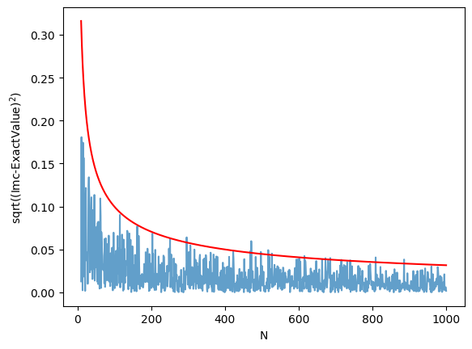
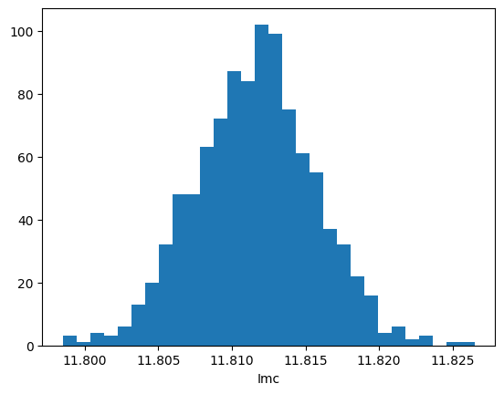

%matplotlib inline
import numpy as np
import matplotlib.pyplot as plt
import seaborn as snsMonte Carlo Integration
When calculus is hard, sample instead.
sampling
montecarlo
integration
probability
Formalizes Monte Carlo integration using uniform random samples and LOTUS, then extends to multidimensional integrals. Uses the Central Limit Theorem to estimate integration error and compares convergence rates with classical quadrature.
The basic idea
Let us formalize the basic idea behind Monte Carlo Integration in 1-D.
Consider the definite integral:
\[ I = \int_{a}^{b} f(x) \, dx \]
Consider:
\[ J = \int_{a}^{b} f(x) U_{ab}(x) \, dx \]
If \(V\) is the support of the uniform distribution on a to b then the pdf \[ U_{ab}(x) = \frac{1}{V} = \frac{1}{b-a}\]
Then from LOTUS and the law of large numbers:
\[J = \frac{1}{V} \int_{a}^{b} f(x) \, dx = \frac{I}{V} = E_{U}[f] = \lim_{n \to \infty} \frac{1}{N}\sum_{x_i \sim U} f(x_i) \]
or
\[I = V \times \lim_{n \to \infty} \frac{1}{N}\sum_{x_i \sim U} f(x_i) \]
Practically speaking, our estimate will only be as exact as the number of samples we draw, but more on this soon..
Example.
**Calculate the integral $ I= _{2}^{3} [x^2 + 4 , x ,(x)] , dx. $**
We know from calculus that the anti-derivative is \[ x^3/3 + 4\sin(x) -4x\cos(x). \]
To solve this using MC, we simply draw \(N\) random numbers from 2 to 3 and then take the average of all the values \(f(x)=x^2 + 4 \, x \,\sin(x)\) and normalized over the volume; this case the volume is 1 (3-2=1).
def f(x):
return x**2 + 4*x*np.sin(x)
def intf(x):
return x**3/3.0+4.0*np.sin(x) - 4.0*x*np.cos(x) a = 2;
b = 3;
# use N draws
N= 10000
X = np.random.uniform(low=a, high=b, size=N) # N values uniformly drawn from a to b
Y =f(X) # CALCULATE THE f(x)
V = b-a
Imc= V * np.sum(Y)/ N;
exactval=intf(b)-intf(a)
print("Monte Carlo estimation=",Imc, "Exact number=", intf(b)-intf(a))Monte Carlo estimation= 11.811532782792291 Exact number= 11.811358925098283Mutlidimensional integral.
That is nice but how about a multidimensional case?
Let us calculate the two dimensional integral \(I=\int \int f(x, y) dx dy\) where \(f(x,y) = x^2 +y^2\) over the region defined by the condition \(x^2 +y^2 ≤ 1\)
In other words we are talking about a uniform distribution on the unit circle
fmd = lambda x,y: x*x + y*y# use N draws
N= 8000
X= np.random.uniform(low=-1, high=1, size=N)
Y= np.random.uniform(low=-1, high=1, size=N)
Z=fmd(X, Y) # CALCULATE THE f(x)
R = X**2 + Y**2
V = np.pi*1.0*1.0
N = np.sum(R<1)
sumsamples = np.sum(Z[R<1])
print("I=",V*sumsamples/N, "actual", np.pi/2.0) #actual value (change to polar to calculate)I= 1.575552456568276 actual 1.5707963267948966Monte-Carlo as a function of number of samples
How does the accuracy depends on the number of points(samples)? Lets try the same 1-D integral $ I= _{2}^{3} [x^2 + 4 , x ,(x)] , dx $ as a function of the number of points.
Imc=np.zeros(1000)
Na = np.linspace(0,1000,1000)
exactval= intf(b)-intf(a)
for N in np.arange(0,1000):
X = np.random.uniform(low=a, high=b, size=N) # N values uniformly drawn from a to b
Y =f(X) # CALCULATE THE f(x)
Imc[N]= (b-a) * np.sum(Y)/ N;
plt.plot(Na[10:],np.sqrt((Imc[10:]-exactval)**2), alpha=0.7)
plt.plot(Na[10:], 1/np.sqrt(Na[10:]), 'r')
plt.xlabel("N")
plt.ylabel("sqrt((Imc-ExactValue)$^2$)")
# /var/folders/wq/mr3zj9r14dzgjnq9rjx_vqbc0000gn/T/ipykernel_23138/1091706491.py:10: RuntimeWarning: invalid value encountered in scalar divide
Imc[N]= (b-a) * np.sum(Y)/ N;Text(0, 0.5, 'sqrt((Imc-ExactValue)$^2$)')
Obviously this depends on the number of \(N\) as \(1/\sqrt{N}\).
Errors in MC
Monte Carlo methods yield approximate answers whose accuracy depends on the number of draws. So far, we have used our knowledge of the exact value to determine that the error in the Monte Carlo method approaches zero as approximately \(1/\sqrt{N}\) for large \(N\), where \(N\) is the number of trials.
But in the usual case, the exact answer is unknown. Why do this otherwise?
So, lets repeat the same evaluation \(m\) times and check the variance of the estimate.
# multiple MC estimations
m=1000
N=10000
Imc=np.zeros(m)
for i in np.arange(m):
X = np.random.uniform(low=a, high=b, size=N) # N values uniformly drawn from a to b
Y =f(X) # CALCULATE THE f(x)
Imc[i]= (b-a) * np.sum(Y)/ N;
plt.hist(Imc, bins=30)
plt.xlabel("Imc")
print(np.mean(Imc), np.std(Imc))11.81160205354668 0.004067818125611405
This looks like our telltale Normal distribution.
This is not surprising
Estimating the error in MC integration using the CLT.
We know from the CLT that if \(x_1,x_2,...,x_n\) be a sequence of independent, identically-distributed (IID) random variables from a random variable \(X\), and that if \(X\) has the finite mean \(\mu\) AND finite variance \(\sigma^2\).
Then,
\[S_n = \frac{1}{n} \sum_{i=1}^{n} x_i ,\]
converges to a Gaussian Random Variable with mean \(\mu\) and variance \(\sigma^2/n\) as \(n \to \infty\):
\[ S_n \sim N(\mu,\frac{\sigma^2}{n}) \, as \, n \to \infty. \]
This is true regardless of the shape of \(X\), which could be binomial, poisson, or any other distribution.
The sums
\[S_n(f) = \frac{1}{n} \sum_{i=1}^{n} f(x_i) \]
are exactly what we want to calculate for Monte-Carlo Integration(due to the LOTUS) and correspond to the random variable f(X) where X is uniformly distributed on the support.
Whatever the original variance of f(X) might be, we can see that the variance of the sampling distribution of the mean goes down as \(1/n\) and thus the standard error goes down as \(1/\sqrt{n}\) as we discovered when we compared it to the exact value as well.
Why is this important?
Comparing to standard integration techniques
What if we changed the dimensionality of the integral? The formula for \(S_n\) does not change, we just replace \(g(x_i)\) by \(g(x_i, y_i, z_i...)\). Thus, the CLT still holds and the error still scales as \(\frac{1}{\sqrt{n}}\).
On the other hand, if we divide the \(a, b\)-interval into \(N\) steps and use some regular integration routine, what is the error? Consider the midpoint rule as illustrated in this diagram from Wikipedia:

The basic idea is that the function value at the midpoint of the interval is used as the height of the approximating rectangle. In general, the differing methods consist of choosing different \(x_i\) below..with left being at the left end, right being at the right end. \[I(est) = \sum_i f(x_i)\Delta x_i = \frac{b-a}{n} \sum_i f(x_i)\]
The error on the estimation of the integral can be shown to decrease as \(\frac{1}{n^2}\). The basic reason for this can be understood on a taylor series expansion of the function to second order. When you integrate on the sub-interval, the linear term vanishes while the quadratic term becomes cubic in \(\Delta x\). So the local error goes as \(\frac{1}{n^3}\) and thus the global as \(\frac{1}{n^2}\).
Monte-Carlo if clearly not competitive with the midpoint method in 1-D. Its actually not even competitive with left or right rectangle methods.
The trapeziod rule uses a line between the sub-interval points while the Simpsons rule uses a quadratic.
These integrations can be generalized to multiple dimensions, and the rule for these
- left or right rule: \(\propto 1/n\)
- Midpoint rule: \(\propto 1/n^2\)
- Trapezoid: \(\propto 1/n^2\)
- Simpson: \(\propto 1/n^4\)
where \(n=N^{1/d}\). MC becomes better than the Simpson method only in 8 dimensions..